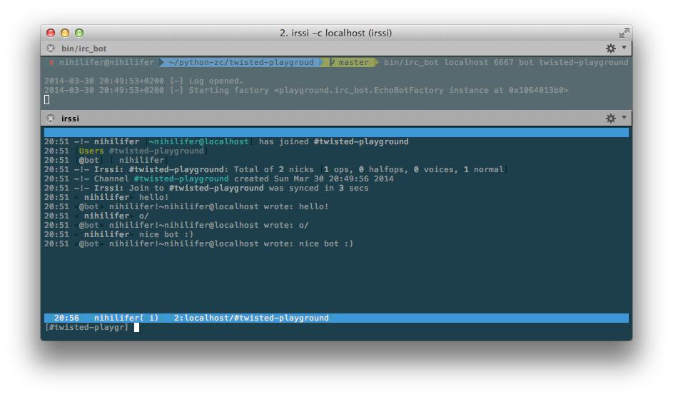
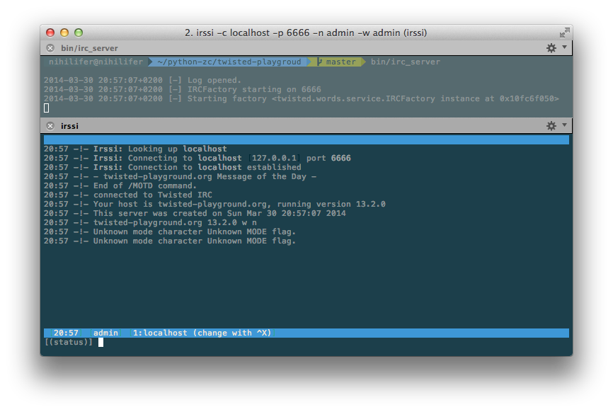

Michał Rostecki, Tomasz Woźniak
STXnext
Twisted is a Python-based event-driven networking framework which allows us to build client and server applications using TCP, FTP, IRC, Jabber, IMAP, SMTP, SSH and many other internet protocols.
There are situations when just setting ftpd, *ircd, sendmail, sshd or any other ready-to-use networking daemon isn't enough, when we want to control what server exactly does serve, how users will be authenticated. The integration of many protocols and even with some Python code sounds like a good idea, doesn't it?
git clone https://github.com/tomaszwozniak/twisted-playground.git
python boostrap.py
# if the one above didn't work
python bootstrap.py -v 2.1.1
bin/buildoutCallback is the fundamental part of event driven application, which are indivated by reactor (event loop) due to events.
Deferred is Twisted's abstraction to manage callbacks. It's the object with two chains - for success callbacks and failure errbacks. When the successful event is triggered, it's propagated in the all callbacks in Deffered's chain.
This example makes no sense in terms of network asynchronous programming, but is shows very clearly how Deffered and callbacks do work.
from __future__ import print_function
from twisted.internet.defer import Deferred
def addBold(result):
return '{0}'.format(result)
def addItalic(result):
return '{0}'.format(result)
def printHTML(result):
print(result)d = Deferred()
d.addCallback(addBold)
d.addCallback(addItalic)
d.addCallback(printHTML)
d.callback('Hello world!')Result:
$ bin/deferred_html
Hello world!An example which makes more sense... maybe a little bit more... and can fail sometimes ;)
from __future__ import print_function
from twisted.internet.defer import Deferred
def onSucces(result):
if 'foo' not in result.lower():
raise Exception(result)
return 'Success on: {0}'.format(result)
def onFailure(failure):
return 'Failure on: {0}'.format(failure)def getDeferred():
d = Deferred()
d.addCallback(onSucces)
d.addErrback(onFailure)
d.addBoth(print)
return d
getDeferred().callback('Foo Bar')
getDeferred().callback('Wahoo')Result:
$ bin/deferred
Success on: Foo Bar
Failure on: [Failure instance: Traceback: : Wahoo
deferred.py:26:
/Users/vador/python/twisted/lib/python2.7/site-packages/twisted/internet/defer.py:382:callback
/Users/vador/python/twisted/lib/python2.7/site-packages/twisted/internet/defer.py:490:_startRunCallbacks
--- ---
/Users/vador/python/twisted/lib/python2.7/site-packages/twisted/internet/defer.py:577:_runCallbacks
deferred.py:8:onSucces
] twisted.python.log function saves log to given file descriptor
import sys
from twisted.python import log
log.startLogging(sys.stdout)The simpliest example of server app, some kind of hello world in Twisted.
from twisted.internet import protocol, reactor
class Echo(protocol.Protocol):
def dataReceived(self, data):
self.transport.write(data)
class EchoFactory(protocol.Factory):
def buildProtocol(self, addr):
return Echo()
def main():
log.startLogging(sys.stdout)
reactor.listenTCP(8000, EchoFactory())
reactor.run()
if __name__ == '__main__':
main()Result:
$ telnet localhost 8000
Trying 127.0.0.1...
Connected to localhost.
Escape character is '^]'.
hello world
hello world
foo
foo
bar
bar
^]
telnet> quit
Connection closed.import sys
from twisted.internet import protocol, reactor
from twisted.python import log
class CommandProtocol(protocol.Protocol):
def write(self, msg):
self.transport.write('{0}\n'.format(msg))
def do_echo(self, *args):
self.write(' '.join(args))
def getCommand(self, cmd):
return getattr(self, 'do_{0}'.format(cmd), None) def dataReceived(self, data):
if not data:
return
data = data.strip().split()
cmd = data[0]
args = data[1:]
command = self.getCommand(cmd)
if not command:
self.write('No such command: {0}'.format(cmd))
return
try:
command(*args)
except Exception, e:
self.write('Error: {0}'.format(e))class CommandFactory(protocol.Factory):
def buildProtocol(self, addr):
return CommandProtocol()
def main():
log.startLogging(sys.stdout)
reactor.listenTCP(8000, CommandFactory())
reactor.run()
if __name__ == '__main__':
main()Result:
$ telnet localhost 8000
Trying 127.0.0.1...
Connected to localhost.
Escape character is '^]'.
echo foo bar
foo bar
foo
No such command: foo
^]
telnet> Connection closed.Twisted is not the web framework like Django, Flask etc., but it can handle HTTP requests and we can write in it our own lightweight "framework".
import sys
from twisted.internet import reactor
from twisted.web import http
from twisted.python import log
class HTTPRequestHandler(http.Request):
resources = {
'/': 'Main page
',
'/about/': 'About me
'
} def process(self):
self.setHeader('Content-Type', 'text/html')
if self.path in self.resources.keys():
self.write(self.resources[self.path])
else:
self.setResponseCode(http.NOT_FOUND)
self.write('Not found
')
self.finish()class MyHTTP(http.HTTPChannel):
requestFactory = HTTPRequestHandler
class MyHTTPFactory(http.HTTPFactory):
def buildProtocol(self, addr):
return MyHTTP()
def main():
log.startLogging(sys.stdout)
reactor.listenTCP(8000, MyHTTPFactory())
reactor.run()
if __name__ == '__main__':
main()Let's see the result
import sys
from twisted.cred import checkers, portal
from twisted.internet import reactor
from twisted.protocols import ftp
from twisted.python import log
def main():
log.startLogging(sys.stdout)
realm = ftp.FTPRealm('./ftp', userHome='./ftp')
ftpFactory = ftp.FTPFactory()
ftpFactory.portal = portal.Portal(realm)
ftpFactory.portal.registerChecker(
checkers.InMemoryUsernamePasswordDatabaseDontUse(admin='admin')
)
reactor.listenTCP(8021, ftpFactory)
reactor.run()
if __name__ == '__main__':
main()Serving Python shell trough SSH protocol
from twisted.conch import manhole, manhole_ssh
from twisted.cred import checkers, portal
from twisted.internet import reactor
def getManholeFactory(namespace, **passwords):
realm = manhole_ssh.TerminalRealm()
realm.chainedProtocolFactory.protocolFactory = (
lambda _: manhole.Manhole(namespace)
)
p = portal.Portal(realm)
p.registerChecker(
checkers.InMemoryUsernamePasswordDatabaseDontUse(**passwords)
)
f = manhole_ssh.ConchFactory(p)
return fdef main():
log.startLogging(sys.stdout)
reactor.listenTCP(2222, getManholeFactory(globals(), admin='admin'))
reactor.run()
if __name__ == '__main__':
main()Result:
$ ssh -p 2222 admin@localhost
>>> from __future__ import print_function
>>> print('Hello world')
Hello world
>>> dir()
['_', '__builtins__', '__doc__', '__file__', '__name__', '__package__', 'checkers', 'getManholeFactory', 'manhole', 'manhole_ssh', 'portal', 'print_function', 'reactor']
>>> [i**2 for i in xrange(10)]
[0, 1, 4, 9, 16, 25, 36, 49, 64, 81]Using SSH protocol in general
import re
import sys
from twisted.conch import avatar, interfaces, recvline
from twisted.conch.insults import insults
from twisted.conch.ssh import factory, keys, session
from twisted.cred import checkers, portal
from twisted.internet import reactor
from twisted.python import log
from zope.interface import implementsclass SSHProtocol(recvline.HistoricRecvLine):
def __init__(self, user):
self.user = user
def do_echo(self, *args):
self.terminal.write(' '.join(args))
def do_quit(self):
self.terminal.loseConnection()
def getCommand(self, cmd):
return getattr(self, 'do_{0}'.format(cmd), None)def lineReceived(self, line):
if line:
line = line.strip().split()
cmd = line[0]
args = line[1:]
command = self.getCommand(cmd)
if command:
try:
command(*args)
except Exception, e:
self.terminal.write('Error: {0}'.format(e))
else:
self.terminal.write('No such command: {0}'.format(cmd))
self.terminal.nextLine()
self.terminal.write(self.ps[self.pn])class SSHAvatar(avatar.ConchUser):
implements(interfaces.ISession)
def __init__(self, username):
# cannot do super
avatar.ConchUser.__init__(self)
self.username = username
self.channelLookup['session'] = session.SSHSession
def openShell(self, protocol):
serverProtocol = insults.ServerProtocol(SSHProtocol, self)
serverProtocol.makeConnection(protocol)
protocol.makeConnection(session.wrapProtocol(serverProtocol))
def getPty(self, *args):
return None
def execCommand(self, *args):
raise NotImplementedError()
def closed(self):
passclass SSHRealm(object):
implements(portal.IRealm)
def requestAvatar(self, avatarId, mind, *interfaces):
return interfaces[0], SSHAvatar(avatarId), lambda: Nonedef getRSAKeys():
with open('id_rsa') as privateBlobFile:
privateBlob = privateBlobFile.read()
privateKey = keys.Key.fromString(data=privateBlob)
with open('id_rsa.pub') as publicBlobFile:
publicBlob = publicBlobFile.read()
publicKey = keys.Key.fromString(data=publicBlob)
return publicKey, privateKeydef main():
log.startLogging(sys.stdout)
sshFactory = factory.SSHFactory()
sshFactory.portal = portal.Portal(SSHRealm())
sshFactory.portal.registerChecker(
checkers.InMemoryUsernamePasswordDatabaseDontUse(admin='admin')
)
publicKey, privateKey = getRSAKeys()
sshFactory.publicKeys = {'ssh-rsa': publicKey}
sshFactory.privateKeys = {'ssh-rsa': privateKey}
reactor.listenTCP(2222, sshFactory)
reactor.run()
if __name__ == '__main__':
main()Result:
$ ssh -p 2222 admin@localhost
>>> echo hello world
hello world
>>> echo foo
foo
>>> echo bar
bar
>>> some_non_existent_command
No such command: some_non_existent_command
>>> quit
Connection to localhost closed.Using Twisted Words (chat framework with protocols like IRC, Jabber/XMPP)
import sys
from twisted.internet import protocol, reactor
from twisted.words.protocols import irc
from twisted.python import logclass EchoBot(irc.IRCClient):
def __init__(self, nickname, channel):
self.nickname = nickname
self.channel = channel
def signedOn(self):
self.join(self.channel)
def privmsg(self, user, channel, msg):
message = '{} wrote: {}'.format(user, msg)
if channel == self.nickname:
self.msg(user, message)
return
self.msg(channel, message)
def action(self, user, channel, action):
self.describe(channel, '{} with {}'.format(action, user))class EchoBotFactory(protocol.ClientFactory):
def __init__(self, nickname, channel):
self.nickname = nickname
self.channel = channel
def buildProtocol(self, addr):
proto = EchoBot(self.nickname, self.channel)
proto.factory = self
return proto
def clientConnectionLost(self, connector, reason):
connector.connect()
def clientConnectionFailed(self, connector, reason):
reactor.stop()def main():
log.startLogging(sys.stdout)
network, port, nickname, channel = sys.argv[1:]
port = int(port)
reactor.connectTCP(network, port, EchoBotFactory(nickname, channel))
reactor.run()
if __name__ == '__main__':
main()Result:
Also based on Twisted Words
import sys
from twisted.cred import checkers, portal
from twisted.internet import reactor
from twisted.python import log
from twisted.words import servicedef main():
log.startLogging(sys.stdout)
wordsRealm = service.InMemoryWordsRealm('twisted-playground.org')
wordsRealm.createGroupOnRequest = True
checker = checkers.InMemoryUsernamePasswordDatabaseDontUse(admin='admin')
ircPortal = portal.Portal(wordsRealm, [checker])
factory = service.IRCFactory(wordsRealm, ircPortal)
reactor.listenTCP(6666, factory)
reactor.run()Result:
